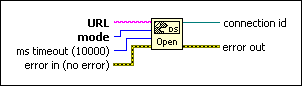
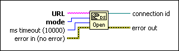

DataSocket Open Function
Owning Palette: DataSocket VI and Functions
Requires: Base Development System
Opens a data connection you specify in URL.

 Add to the block diagram Add to the block diagram |
 Find on the palette Find on the palette |
Owning Palette: DataSocket VI and Functions
Requires: Base Development System
Opens a data connection you specify in URL.

| Add to the block diagram |
Find on the palette |
 |
URL identifies the data source to read or data target to write. URLs begin with the name of the protocol you want to use to read or write the data, such as psp, dstp, opc, ftp, http, and file. You also can wire a shared variable control to this terminal. | ||||||||||||
 |
mode specifies the operation you want to perform through the data connection. Buffering applies when you use the DataSocket Read function to read data a server writes. Buffering is not available when you use front panel DataSocket data binding to read data. Buffering is available for front panel data binding through the Shared Variable Engine if you bind controls to shared variables with buffering enabled on the Network page of the Shared Variable Properties dialog box.
|
||||||||||||
 |
ms timeout specifies the time in milliseconds to wait until LabVIEW establishes a connection. The default is 10,000 ms (10 seconds). If you specify –1, the function waits indefinitely. If you specify 0, LabVIEW does not attempt to establish a connection and returns error 56. | ||||||||||||
 |
error in describes error conditions that occur before this node runs. This input provides standard error in functionality. | ||||||||||||
 |
connection id uniquely identifies the data connection. | ||||||||||||
 |
error out contains error information. This output provides standard error out functionality. |